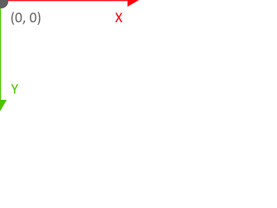
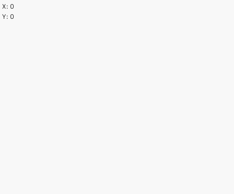
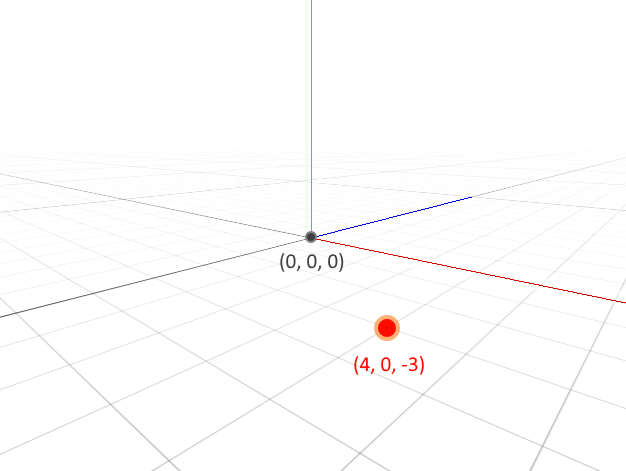
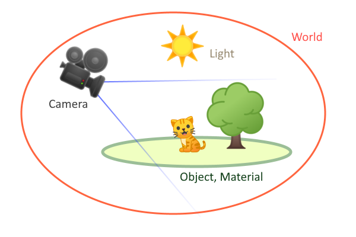
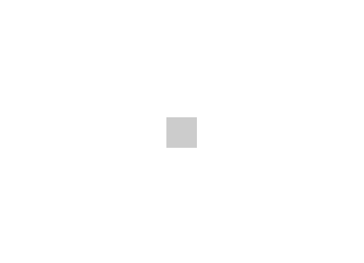
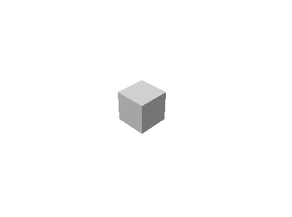
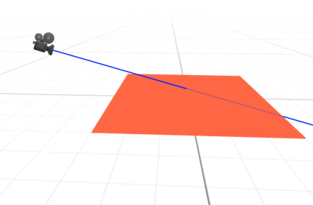
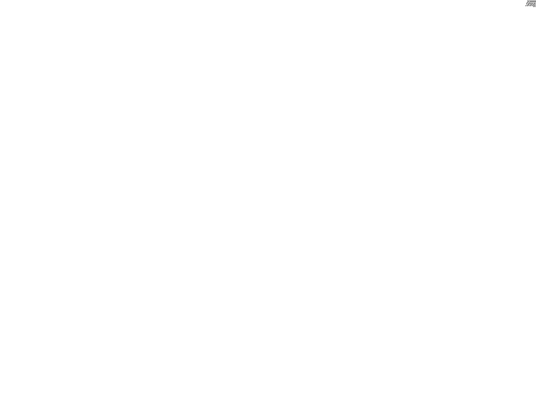
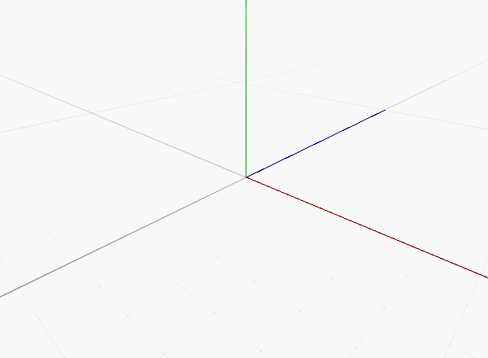

描画の基本
この章では、画面上に図形や絵を表示するための基礎を学びます。
2D 座標系
ウィンドウに描画されるものは座標系に従います。
座標系はウィンドウの左上隅を X 座標 0、X 座標 0 として、X と Y の値は右下に向かって大きくなります。

座標を確認するため、Mouse::position を使って現在のマウスカーソルの座標を表示してみます。
#include <Lumino.hpp>
class App : public Application
{
virtual void onUpdate() override
{
Debug::print(0, String::format(u"X: {0}", Mouse::position().x));
Debug::print(0, String::format(u"Y: {0}", Mouse::position().y));
}
};
LUMINO_APP(App);

Lumino において 2D 座標系を使うのは、主に テキストやボタンといった UI (ユーザーインターフェイス) を作成するときです。UI についてはチュートリアルの中盤で触れます。
ゲーム開発のためのキャラクターや背景の表示には、次の 3D 座標系を主に使用します。
3D 座標系
Lumino の 3D 空間は、X軸,Y軸,Z軸 からなる直交座標系によって定められます。
位置は 3次元ベクトル(x, y, z) で表され、例えば (4, 0, -3) は、地平面上の座標 (4, -3) と高さ 0 を意味します。

この図では、X軸は 赤 の線、Y軸は 緑 の線、Z軸は 青 の線で表しています。中心を (0, 0, 0) とし、線の延びる方向を正の値とします。
このように X+方向 を右、Y+方向を上、Z+方向を奥行き(前方) とする座標系を 左手座標系 と呼び、Lumino はこれを基本としています。
3D の構成要素
様々なオブジェクトを配置し、3D 空間にシーンを作り上げるための舞台を ワールド と呼びます。
ワールドは非常に多くの機能を持っていますが、その中でも特に重要なものは次の通りです。
- オブジェクト
- カメラ
- ライト
- マテリアル
直方体や球体などの3Dオブジェクトやモデリングデータなどを オブジェクト (あるいは WorldObject) とよび、これらはすべてワールドの中に配置します。
また、3D 空間を 2D のウィンドウ上に写し出す機能を カメラ と呼びます。
ライト と マテリアル はオブジェクトに色や陰影を持たせ、シーンを印象的なものにするための機能です。
映画などの撮影のように役者(オブジェクト) を配置して、カメラマンがどの位置から撮影するか、照明をどのように当てるかを決めることでシーンが作られるのと同じようなイメージです。

このページではオブジェクトとカメラについて説明します。
オブジェクトを作成する
オブジェクトは物体の形状や材質を表すパラメータや、ワールド内の配置場所を示す座標などの情報をまとめたものです。
最初のオブジェクトとして、立方体を表示してみましょう。
#include <Lumino.hpp>
class App : public Application
{
void onInit() override
{
auto box = BoxMesh::create();
}
};
LUMINO_APP(App);

ウィンドウ中央に四角形が表示されました。
Note
このチュートリアルで紹介する方法では、オブジェクトを「描く」というよりは、「作って、3D 空間に置く」といった考え方がメインとなります。
カメラを操作する
今はちょうどカメラが立方体を正面から撮影している状態ですが、このままではこの四角形が立方体かどうかを判断できません。
次はカメラを移動して、視点を変えてみましょう。
Lumino の初期状態は、空っぽのワールドにひとつのカメラが配置されています。
このカメラを移動させてみます。
デフォルトのカメラは Engine::camera で取得し、setPosition で 3D 位置を指定します。また、位置を指定した後に lookAt でワールドの原点を向くようにします。
#include <Lumino.hpp>
class App : public Application
{
void onInit() override
{
auto box = BoxMesh::create();
auto camera = Engine::camera();
camera->setPosition(5, 5, -5);
camera->lookAt(0, 0, 0);
}
};
LUMINO_APP(App);

カメラを座標 (5, 5, -5) に移動し、原点 (0, 0, 0) を注視するようにしました。
立方体を斜め上から見下ろす形になり、立体的に見えるようになりました。
座標系を変換する (2D -> 3D)
例えばマウスで指している位置にオブジェクトを表示したい場合、2D 座標から 3D 座標へ変換する必要があります。
ただし、2D 座標から 3D 座標への変換では、直に 3D の一点を求めることはできません。
カメラが写している 2D 画面上の "点" を 3D 空間で考えると、次のようにカメラから前方へ伸びる "線分" となります。

例えば地平面 (XZ平面) 上の点を求めたい場合、この線分と平面の交差判定を行わなければなりません。
Lumino では線分を使った衝突判定をサポートする Raycaster が用意されていますので、これを使ってみます。
Note
このような線分のことを レイ (Ray) と呼び、レイを使った衝突判定や物体検出を レイキャスティング (Ray-casting) と呼びます。
#include <Lumino.hpp>
class App : public Application
{
Ref<BoxMesh> box; // (1)
void onInit() override
{
box = BoxMesh::create();
auto camera = Engine::camera();
camera->setPosition(5, 5, -5);
camera->lookAt(0, 0, 0);
}
void onUpdate() override
{
auto raycaster = Raycaster::fromScreen(Mouse::position()); // (2)
if (auto result = raycaster->intersectPlane(0, 1, 0)) { // (3)
box->setPosition(result->point()); // (4)
}
}
};
LUMINO_APP(App);
onInit()で作成した box をonUpdate()で操作できるようにするため、これまでauto box = ...;と定義していたローカル変数ではなくメンバ変数として定義します。- スクリーン上の現在のマウス位置
Mouse::position()を起点としてレイキャスティングを行うRaycasterインスタンスを取得します。 - レイと平面との衝突判定を行います。
intersectPlane()の引数は面の表方向を表す x, y, z 値です。ここでは、Y+ 方向 （真上）を向く、つまるところ通常の地平面を指定しています。 衝突した場合、結果を返します。衝突しなければ nullptr で、if 内には入りません。 result->point()で衝突した点を取得できます、これをカメラの時と同じようしてbox->setPosition()にセットすることで、Box を移動させます。
Note
これまでは auto によって推論されコード上には現れませんでしたが、BoxMesh::create() の戻り値の型は Ref<BoxMesh> です。

マウス位置に Box が表示されるようになり、これまでよりもずっと 3D 空間を触りやすくなりました！
デバッグ
最後に、ワールドのデバッグに使える便利機能を紹介します。
オブジェクトが上手く表示されないようなケースでは、ワールドの状況を観察することが解決の助けになります。（例えば、配置する座標を間違えて、別のオブジェクトの後ろに隠れていたり、カメラの裏側に置かれているかもしれません…）
ここでは 3D 空間にグリッドを表示し、カメラをマウスで操作できるようにして、ワールドを俯瞰しやすくしてみます。
#include <Lumino.hpp>
class App : public Application
{
Ref<BoxMesh> box;
void onInit() override
{
Engine::renderView()->setGuideGridEnabled(true);
Engine::camera()->addComponent(CameraOrbitControlComponent::create());
box = BoxMesh::create();
}
void onUpdate() override
{
auto raycaster = Raycaster::fromScreen(Mouse::position());
if (auto result = raycaster->intersectPlane(0, 1, 0)) {
box->setPosition(result->point());
}
}
};
LUMINO_APP(App);
onInit() の先頭に2行の新しいコードが増えています。
Engine::renderView()->setGuideGridEnabled(true);は、ワールド全体の地平面にグリッドを表示します。また、原点から各軸方向を示す赤、緑、青の線分を表示します。Engine::camera()->addComponent(CameraOrbitControlComponent::create());は、これまで使ってきたカメラに対して、マウスを使って操作できる機能を追加します。
マウス操作は次の通りです。
| マウス | 動作 |
|---|---|
| 右ボタンドラッグ | 回転 |
| 中ボタンドラッグ | 平行移動 |
| マウスホイール | 拡大・縮小 |

Note
RenderView や Component など新しい言葉が登場していますが、これらは後のチュートリアルで説明します。
ここではあくまでデバッグ用としての紹介にとどめています。
Warning
ここで紹介したグリッド表示とカメラ操作は実験的な機能です。
将来的には（機能が使えなくなるということはありませんが）クラスやメソッドの名前が変わる可能性があります。 Lumino をバージョンアップした際にコンパイルエラーなどが発生する場合は、最新のチュートリアルを参照してください。